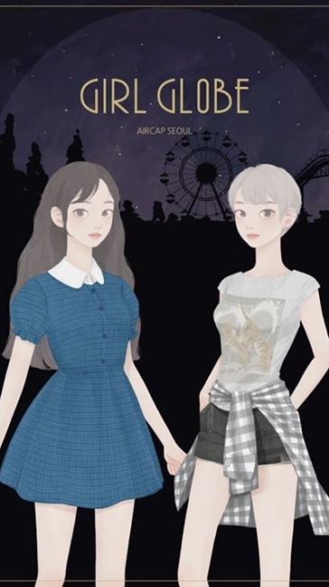
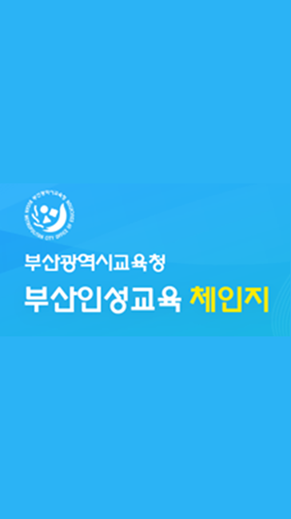
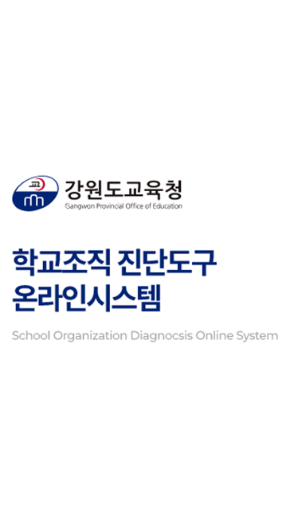
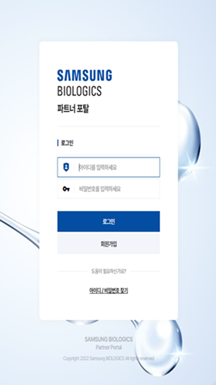
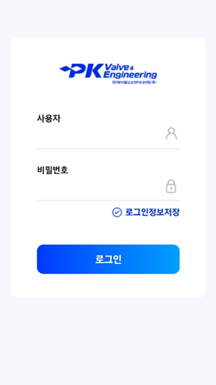
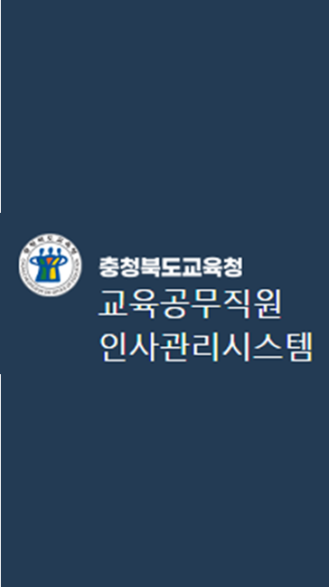
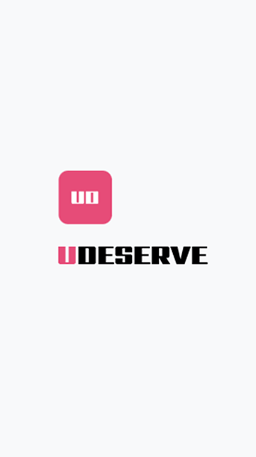
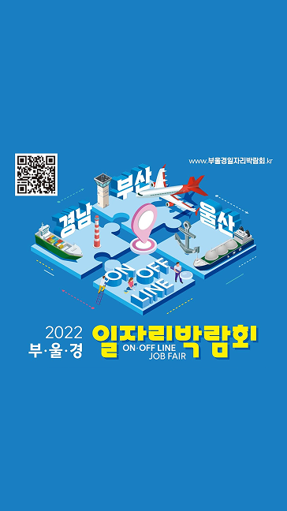
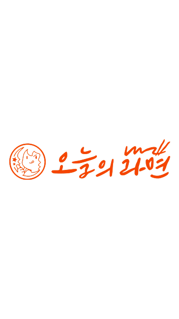
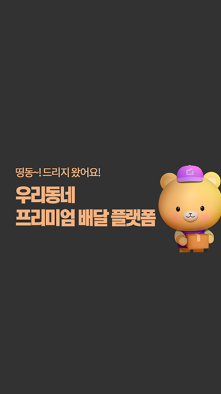

프로젝트 목록▾
SKYWALK
2024.01 ~ 2026.02 (2년 2개월)
▾
코코마인 2024.12 ~ 2026.02▾
- 데이터 관리·최적화 및 서버 구조 개선으로 대규모 유저 환경 안정성 확보
- 채팅/광장/빌리지/지적도 서버 개발로 다양한 유저 상호작용 지원
- Redis 기반 랭킹 관리 및 게임 서버 콘텐츠 개발
장르: 소셜 네트워킹 서비스(SNS) · 코지 라이프 시뮬레이션
코코마인 산리오에서 한 단계 발전한 형태로, 마을과 타운 단위로 공간을 구성하며 소통을 강화한 코지 라이프 시뮬레이션 SNS입니다. 데이터 관리·최적화와 서버 구조 개선을 주도해 대규모 유저가 동시 접속하는 환경에서도 서비스가 끊기지 않도록 안정성을 확보했습니다. 채팅/광장/빌리지/지적도 서버를 새롭게 개발해 다양한 유저 상호작용을 지원했고, Redis 기반 랭킹 시스템과 신규 게임 콘텐츠 개발로 유저 경험을 한층 풍부하게 만들었습니다.
코코마인 산리오 캐릭터즈 2024.07 ~ 2026.02▾
- 어드민 전체 기능 개발 주도, 데이터 관리 및 최적화로 서버 성능 개선
- 채팅 서버·광장 서버 개발로 유저 간 실시간 상호작용 지원
- Redis 기반 랭킹 관리, 쓰레드 이용 세션 분리로 안정성·확장성 확보
장르: 소셜 네트워킹 서비스(SNS) · 메타버스형 커뮤니티
헬로키티, 마이멜로디 등 산리오 인기 캐릭터들과 함께 집을 꾸미고 친구들과 소통하는 메타버스형 소셜 네트워킹 서비스입니다. 유저관리·결제시스템·우편시스템을 포함한 어드민 전체 기능 개발을 주도했고, 쿠폰 시스템과 게임 API를 직접 설계·구현했습니다. 채팅 서버와 광장 서버를 새로 개발해 유저 간 실시간 상호작용을 지원했으며, Redis 기반 랭킹 관리와 쓰레드 단위 세션 분리로 트래픽이 몰리는 상황에서도 안정성과 확장성을 확보했습니다.
걸글로브 2024.04 ~ 2026.02▾
- 서버 유지보수 및 어드민 시스템 관리·추가 기능 개발로 운영 효율성 향상
- 데이터 관리 및 최적화로 대규모 유저 데이터 안정적 처리
- DB 이전 작업 수행으로 시스템 업그레이드 지원
장르: 스타일링 게임 (패션 드레스업)
4,000여 개의 실제 브랜드 패션 아이템을 수집해 캐릭터를 꾸미는 스타일링 게임입니다. 서버 유지보수와 어드민 시스템 관리를 맡아 운영 안정성을 높였고, 호감도 기능을 신규로 개발해 콘텐츠 다양성을 확장했습니다. 서비스 규모에 맞춰 DB 버전 관리와 축소화 작업, 서버 이전까지 직접 수행해 인프라 운영 부담을 줄였습니다.

유미의 세포들 2024.04 ~ 2026.02▾
- 어드민 시스템 추가 기능 개발로 운영팀의 효율적인 게임 관리 지원
- 데이터 관리 및 최적화로 게임 데이터 안정적 처리
- DB 이전 작업 수행으로 시스템 업그레이드 지원
장르: 매치-3 퍼즐 게임
네이버웹툰 '유미의 세포들' IP를 기반으로 한 매치-3 퍼즐 게임입니다. 어드민 시스템 추가 기능 개발을 담당해 운영팀이 이벤트와 유저 데이터를 더 효율적으로 관리할 수 있도록 지원했습니다. 서버 통합과 DB 이전 작업을 함께 수행해 게임 진행 중 발생하는 다양한 데이터를 안정적으로 처리했습니다.
놀러와, 마이홈 2024.01 ~ 2026.02▾
- 한국/일본/대만/영미 4개국 서버 유지보수로 안정적인 서비스 운영 지원
- 데이터 관리 및 최적화로 서버 성능 개선, 신규 콘텐츠 개발
- MySQL 버전업 대응 소스 코드 수정으로 시스템 호환성·안정성 확보
- Looker Studio 기반 데이터 시각화 대시보드 구축으로 운영팀 효율성 향상
장르: SNG(소셜 네트워크 게임) · 라이프스타일 시뮬레이션
파밍과 제작을 통해 자신만의 공방을 꾸미고 다양한 사람들과 소통할 수 있는 캐주얼 SNG입니다. 한국/일본/대만/영미 4개국 서버를 동시에 운영하며 시차와 트래픽 패턴이 다른 환경에서도 안정적인 서비스가 유지되도록 점검과 장애 대응을 담당했습니다. 결제 오류 보완, MySQL 버전업 대응 등 운영 이슈를 해결했고, BigQuery 기반 재화·토큰 통계 대시보드를 구축해 운영팀이 데이터 기반으로 의사결정을 할 수 있도록 지원했습니다.
UXIS
2023.04 ~ 2023.08 (5개월)
▾
부산교육청 인성교육 체인지 2023.05 ~ 2023.07▾
- 관리자/사용자 페이지 구현
- 교육청·통합시스템·예약시스템 API 연동으로 데이터 흐름 연결
- DB 설계 및 푸시 기반 알림 시스템 개발
부산광역시교육청의 게시물과 통합예약시스템 정보를 학부모가 한눈에 확인할 수 있도록 만든 모바일 친화형 웹 서비스입니다. 관리자/사용자 페이지를 처음부터 구현하고 교육청·통합시스템·예약시스템 등 다수의 외부 API를 연동해 데이터 흐름을 안정적으로 연결했습니다. DB 설계와 푸시 기반 알림 시스템까지 함께 개발해 학부모들이 필요한 정보를 실시간으로 받아볼 수 있도록 했습니다.

강원도 교육청 학교 진단 시스템 2023.04 ~ 2023.05▾
- 만족도 시스템 기능 개발, 학교 자체 설문 기능 구현
- 운영 중 발생한 오류 수정으로 시스템 안정성 확보
강원도교육청 관리자와 소속 교사들이 학교 운영 현황을 진단하고 개선점을 파악할 수 있도록 지원하는 학교 조직 진단 프로그램입니다. 기존 시스템의 기능을 고도화하고 만족도 조사 시스템과 학교 자체 설문 기능을 새로 구현했으며, 운영 중 발생한 오류를 직접 수정해 시스템 안정성을 확보했습니다.

UXIS
2022.01 ~ 2022.12 (1년)
▾
삼성 바이오로직스 파트너 포탈 2022.10 ~ 2022.12▾
- 단독 개발, DB 설계 및 전체 페이지 개발
- OKTA SSO·KNOX MAIL API 적용으로 보안성·편의성 강화
삼성 바이오로직스 관리자와 협력업체 간의 소통 및 작업 공간을 제공하는 파트너 포탈을 단독으로 설계·개발했습니다. DB 설계부터 관리자/사용자 페이지 전체 개발까지 혼자서 담당했고, OKTA SSO와 KNOX MAIL API를 적용해 삼성 고유의 보안 요구사항을 충족시키면서도 사용 편의성을 높였습니다.

PK Valve & Engineering PWA 2022.07 ~ 2022.10▾
- 개발 PM으로 전체 개발 총괄
- 자원 관리 시스템 및 QR 코드 인식 기능 구현
- PWA 기반 시스템으로 모바일 환경 자원 관리 지원
PK 밸브의 자원 관리 시스템 개발 프로젝트에서 개발 PM을 맡아 기획부터 구현까지 전체 개발을 총괄했습니다. 자원 관리 시스템과 QR 코드 인식 기능을 직접 구현했고, PWA 기반으로 시스템을 개발해 모바일 환경에서도 설치 없이 효율적인 자원 관리가 가능하도록 했습니다. DB 설계와 IIS 인수인계서 작성까지 마무리해 운영 안정성을 높였습니다.

충청북도교육청 인사관리 시스템 2021.12 ~ 2022.07▾
- 전보 및 전보 점수제 기능, 전보 알고리즘 구현으로 인사 이동 관리 효율화
- 인사기록 관리, 근무성적평정, 설문조사 및 통계 기능 개발
충청북도교육청 소속 교육공무직원의 인사 행정 전반을 지원하는 인사관리 시스템입니다. 전보 및 전보 점수제 기능과 전보 알고리즘을 설계·구현해 복잡한 인사 이동 절차를 효율적으로 처리할 수 있도록 했습니다. 인사기록 관리, 근무성적평정, 설문조사 및 통계 기능까지 폭넓게 개발해 교육청의 인사 행정 업무 전반을 디지털화했습니다.

유디저브 2022.05▾
- 즐겨찾기 기능, 사용자 페이지 개발
- 공지사항, 1:1 문의사항 기능 개발
창작자와 구독자가 자유롭게 소통하며 창작물을 게시할 수 있는 커뮤니티 플랫폼입니다. 짧은 일정의 단기 프로젝트로 참여해 즐겨찾기 기능, 사용자 페이지, 공지사항, 1:1 문의사항 기능을 빠르게 구현하며 일정 내 안정적으로 서비스를 오픈했습니다.

UXIS
2021.03 ~ 2021.12 (10개월)
▾
배러온 2021.08 ~ 2021.12▾
- 단독 개발로 비대면 화상 시스템 솔루션 개발 및 DB 설계
- 턴 서버 구축
- 화상 회의 중 참여자 집중도 분석 알고리즘 개발
비대면 화상 교육·상담·코칭(Better Teaching/Consulting/Coaching)을 지원하는 화상 시스템 구축 프로젝트에 단독 개발자로 참여했습니다. 화상 시스템 솔루션 개발과 DB 설계, 턴 서버 구축까지 인프라 전반을 직접 담당했고, 화상 회의 중 참여자의 집중도를 분석하는 알고리즘을 개발해 비대면 교육의 품질을 높였습니다.

부울경 온라인 일자리 박람회 2021.08 ~ 2021.12▾
- 취업생/면접관/상담관 대상 화상 상담·인터뷰 시스템 운영
- 기존 화상 시스템 솔루션을 박람회 환경에 맞게 최적화
취업 준비생과 면접관, 상담관이 함께 참여하는 비대면 화상 일자리 박람회 시스템입니다. 기존에 직접 개발한 화상 시스템 솔루션을 박람회 운영 환경에 맞게 최적화해 다수의 화상 상담과 인터뷰가 동시에 안정적으로 진행될 수 있도록 지원했습니다.

오늘의 라면 2021.05 ~ 2021.07▾
- 사용자 메인 페이지 개발, 구독 및 선물 기능 구현
- FAQ 기능 개발로 고객 문의 대응 효율화
다양한 라면 레시피를 소개하고 관련 제품을 판매하는 커머스형 웹서비스입니다. 사용자 메인 페이지를 개발하고 구독 및 선물 기능을 구현해 재구매와 신규 유입을 함께 끌어냈으며, FAQ 기능을 개발해 고객 문의 대응 시간을 줄였습니다.

드리지 2021.03 ~ 2021.07▾
- 전체 관리자 페이지 개발로 가게·주문 관리 기능 구현
- 사용자용 앱 개발로 직관적인 주문·배달 경험 제공
사용자와 가게 간의 배달을 보조하는 배달 중개 플랫폼입니다. 전체 관리자 페이지를 개발해 가게 등록과 주문 현황을 한 곳에서 관리할 수 있도록 했고, React Native 기반 사용자 앱을 개발해 가게 탐색부터 주문, 공지사항 확인까지 직관적인 사용 경험을 제공했습니다.
